전기기사 (2008-07-27 기출문제)
1과목: 전기자기학
1. 도체에 교류가 흐르는 경우 표피효과에 대한 설명으로 가장 알맞은 것은?
- 도체 표면의 전류 밀도가 커지고 중심이 될 수록 전류 밀도가 작아지는 현상
- 도체 표면의 전류 밀도가 작아지고 중심이 될수록 전류 밀도가 커지는 현상
- 도체 표면의 전류 밀도가 커지고 중심이 될 수록 전류 밀도가 더욱 커지는 현상
- 도체 표면의 전류 밀도가 작아지고 중심이 될수록 전류 밀도가 더욱 작아지는 현상
(정답률: 72%)

2. 유전체에서의 변위 전류에 대한 설명으로 옳은 것은?
- 유전체의 굴절률이 2배가 되면 변위 전류의 크기도 2배가 된다.
- 변위 전류의 크기는 투자율의 값에 비례한다.
- 변위 전류는 자계를 발생시킨다.
- 전속 밀도의 공간적 변화가 변위 전류를 발생시킨다.
(정답률: 67%)
3. 환상 철심에 권수 NA인 A코일과 NB인 B코일이 있을 때, 코일 A의 자기인덕턴스가 LAH라면 두 코일간의 상호 인덕턴스 [H]는? (단, A코일과 B코일 간의 누설 자속은 없는 것으로 한다.)
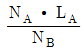
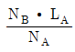
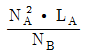
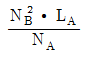
(정답률: 85%)
4. 대전 도체 표면의 전계의 세기는?
- 곡률이 크면 커진다.
- 곡률이 크면 작아진다.
- 평면일 때 가장 크다.
- 표면 모양에 무관하다.
(정답률: 74%)
5. 단면적 15[cm2] 의 자석 근처에 같은 단면적을 가진 철편을 놓았을 때, 그 곳을 통하는 자속이 3×10-4Wb이면 철편에 작용하는 흡입력은 약 몇 [N]인가?
- 12.2
- 23.9
- 36.6
- 48.8
(정답률: 57%)
6. 진공 중에서 전계 E=√2 Eesinω(t-x/c)[V/m]인 평면 전자파가 있을 때 자계의 실효값은 약 몇 [A/m]인가?
- 1.3×10-3E
- 2.7×10-3Eeₑ
- 5.4×10-3E
- 8.1×10-3Ee
(정답률: 66%)
7. 평면 도체 표면에서 진공내 d[m]의 거리에 점전하 Q[C]이 있을 때 이 전하를 무한원까지 운반하는데 요하는 일은 몇 [J]인가?
- 9×109×Q2/d
- 4.5×109×Q2/d
- 3×109×Q2/d
- 2.25×109×Q2/d
(정답률: 50%)
8. 비유전율 ℇs=5인 유전체 중에서 전속밀도가 4×10-4C/m2일 때 분극의 세기는 약 몇 [C/m2]인가?
- 1.6×10-4
- 2.4×10-4
- 3.2×10-4
- 4.8×10-4
(정답률: 61%)
9. 그림에서 직선 도체 바로 아래 10cm 위치에 지침이 나란히 있다고 하면 이때의 자침에 작용하는 회전력은 약 몇 [N·m/rad]인가? (단, 도체의 전류는 10[A], 자침의 자극의 세기는 10-6[Wb]이고, 자침의 길이는 10[cm]이다.)
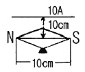
- 1.59×10-6
- 7.95×10-6
- 15.9×10-6
- 79.5×10-6
(정답률: 48%)
10. 반지름이 1[m]인 고립 도체구의 정전용량은 약 몇 [pF]인가?
- 1.1
- 11
- 111
- 1111
(정답률: 75%)
11. 그림과 같이 환상 철심에 2개의 코일을 감고, 1차 코일을 전지에 2차 코일을 검류계에 연결한다. 다음의 각 경우 중 검류계에 흐르는 전류의 방향이 옳게 언급된 것은?
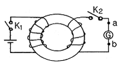
- 스위치 K2를 닫은 다음 스위치 K1을 닫으면 전류는 b에서 a로 흐른다.
- 스위치 K1을 닫은 후 잠깐 있다가 스위치 K2를 닫으면 전류는 a에서 b로 흐른다.
- 스위치 K1과 K2를 닫아 놓고, 스위치 K1을 급히 열면 전류는 b에서 a로 흐른다.
- 스위치 K1과 K2를 닫아 놓고, 스위치 K2을 급히 열면 전류는 b에서 a로 흐른다.
(정답률: 47%)
12. 진공 중에 전하량 3×10-6[C]인 두 개의 대전체가 서로 떨어져 있고, 상호 간에 작용하는 힘이 9×10-3[N]일 때, 이들 사이의 거리는 몇 [m]인가?
- 2
- 3
- 4
- 5
(정답률: 78%)
13. 도전율 σ=4[S/m], 비투자율 μs=1, 비유전율 ℇr=81 인 바닷물 중에서 최소한 유전손실정접 (tanδ)이 100 이상이 되기 위한 주파수 범위 [MHz]는?
- f≤2.23
- f≤4.45
- f≤8.89
- f≤17.78
(정답률: 49%)
14. 자계의 벡터 포텐셜을 A[Wb/m]라 할 때 도체 주위에서 자계 B[Wb/m2]가 시간적으로 변화하면 도체에 발생하는 전계의 세기 E[V/m]는?
- E = -(∂A/∂t)
- rot E = -(∂A/∂t)
- rot E = ∂B/∂t
- E = rot B
(정답률: 64%)
15. 30[V/m]의 전계내의 60[V] 되는 점에서 1[C]의 전하를 전계 방향으로 70[cm] 이동한 경우, 그 점의 전위는 몇 [V]인가?
- 9
- 21
- 39
- 51
(정답률: 74%)
16. 두 종류의 금속으로 하나의 폐회로를 만들고 여기에 전류를 흘리면 양 접속점에서 한쪽은 온도가 올라가고, 다른 쪽은 온도가 내려가서 열의 발생 또는 흡수가 생기고, 전류를 반대 방향으로 변화시키면, 열의 발생부와 흡수부가 바뀌는 현상이 발생한다. 이 현상을 지칭하는 효과로 알맞은 것은?
- Pinch 효과
- Pelter 효과
- Thomson 효과
- Seebeck 효과
(정답률: 63%)
17. 그림과 같이 반지름이 20[Cm]인 도체 원판이 그 축에 평행이고, 세기가 2.4×103AT/m인 균일 자계 내에서 1분간에 1800회의 회전 운동을 하고 있다. 이 원판의 축과 원판 주위 사이에 2Ω[mA]의 저항체를 접속시킬 때, 이 저항에 흐르는 전류는 약 몇 [mA]인가? (단, 원판의 저항은 무시하고, 원판의 투자율은 공기의 투자율과 같다고 한다.)
- 2.8
- 3.8
- 5.7
- 11.4
(정답률: 27%)
18. 두 유전체의 경계면에 대한 설명 중 옳은 것은?
- 두 유전체의 경계면에 전계가 수직으로 입사하면 두 유전체 내의 전계의 세기는 같다.
- 유전율이 작은 쪽에 전계가 입사할 때 입사각은 굴절각보다 크다.
- 경계면에서 정전력은 전계가 경계면에 수직으로 입사할 때 유전율이 큰 쪽에서 작은 쪽으로 작용한다.
- 유전율이 큰 쪽에서 작은 쪽으로 전계가 경계면에 수직으로 입사할 때, 유전율이 작은 쪽의 전계의 세기가 작아진다.
(정답률: 67%)
19. 자계의 실효값이 1[mA/m]인 평면 전자파가 공기 중에서 이에 수직되는 수직 단면적 10[m2]을 통과하는 전력은 몇 [W]인가?
- 3.77×10-2
- 3.77×10-3
- 3.77×10-4
- 3.77×10-6
(정답률: 43%)
20. 유전체에 작용하는 힘과 관련된 사항으로 전계 중의 두 유전체가 경계면에서 받는 변형력을 무엇이라 하는가?
- 쿨롱의 힘
- 맥스웰의 응력
- 톰슨의 응력
- 볼타의 힘
(정답률: 63%)
2과목: 전력공학
21. 다음 중 모선방식의 종류에 속하지 않는 것은?
- 단일 모선
- 2중 모선
- 3중 모선
- 환상 모선
(정답률: 65%)
22. 다음 중 송·배전 선로에 대한 설명으로 옳지 않은 것은?
- 송 배전선로는 저항, 인덕턴스, 정전용량, 누설 컨덕턴스라는 4개의 정수로 이루어진 연속된 전기 회로이다.
- 송 배전선로는 전압강하, 수전전력, 송전손실, 안정도 등을 계산하는데 선로 정수가 필요하다.
- 장거리 송전선로에 대해서 정밀한 계산을 할 경우에는 분포 정수 회로로 취급한다.
- 송배전 선로의 선로 정수는 원칙적으로 송전전압, 전로 또는 역률 등에 의해서 영향을 많이 받게 된다.
(정답률: 58%)
23. 다음 중 원자로 내의 중성자 수를 적당하게 유지하기 위해 사용되는 제어봉의 재료로 알맞은 것은?
- 나트륨
- 베릴륨
- 카드뮴
- 경수
(정답률: 56%)
24. 화력 발전소에서 재열기의 목적은?
- 공기를 가열한다.
- 급수를 가열한다.
- 증기를 가열한다.
- 석탄을 건조한다.
(정답률: 83%)
25. 발전기나 변압기의 내부고장 검출에 가장 많이 사용되는 계전기는?
- 역상 계전기
- 비율차동 계전기
- 과전압 계전기
- 과전류 계전기
(정답률: 79%)
26. 정격 10[kVA]의 주상변압기가 있다. 이것의 2차 측 일부하곡선이 그림과 같을 때, 1일의 부하율은 몇 [%]인가?
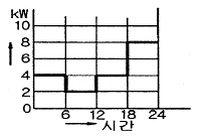
- 52.35
- 54.35
- 56.25
- 58.25
(정답률: 60%)
27. 피뢰기가 구비하여야 할 조건으로 옳지 않은 것은?
- 속류의 차단 능력이 충분할 것
- 충격 방전 개시 전압이 높을 것
- 상용 주파 방전 개시 전압이 높을 것
- 방전 내량이 크면서 제한 전압이 낮을 것
(정답률: 70%)
28. 선택접지(지락) 계전기의 용도를 옳게 설명한 것은?
- 단일 회선에서 접지고장 회선의 선택 차단
- 단일 회선에서 접지전류의 방향 선택 차단
- 병행 2회선에서 접지고장 회선의 선택 차단
- 병행 2회선에서 접지 사고의 지속시간 선택 차단
(정답률: 76%)
29. 다음 중 현재 널리 사용되고 있는 GCB(Gas Circuit Breaker)용 가스는?
- SF6
- 알곤 가스
- 네온 가스
- N2가스
(정답률: 82%)
30. 가공 전선의 구비 조건으로 옳지 않은 것은?
- 도전율이 높을 것
- 기계적인 강도가 클 것
- 비중이 클 것
- 신장률이 클 것
(정답률: 75%)
31. 중성점 비접지방식에서 가장 많이 사용되는 변압기의 결선 방법은?
- V-V
- Y-Y
- Δ-Y
- Δ-Δ
(정답률: 60%)
32. 송전단 전압이 3.4[kV], 수전단 전압이 3[kV]인 배전 선로에서 수전단의 부하를 끊은 경우 수전단 전압이 3.2[kV]로 되었다면 전압 변동률은 약 몇 [%]인가?
- 6.25
- 6.67
- 12.5
- 13.3
(정답률: 64%)
33. 송전선로에 복도체를 사용하는 이유로 가장 알맞은 것은?
- 선로의 진동을 없앤다.
- 철탑의 하중을 평형화 한다.
- 코로나를 방지하고 인덕턴스를 감소시킨다.
- 선로를 직격으로부터 보호한다.
(정답률: 83%)
34. 교류 송전방식에 비교하여 직류 송전방식을 설명할 때 옳지 않은 것은?
- 선로의 리액턴스가 없으므로 안정도가 높다.
- 유전체손은 없지만 충전용량이 커지게 된다.
- 코로나손 및 전력손실이 적다.
- 표피효과나 근접효과가 없으므로 실효저항의 증대가 없다.
(정답률: 59%)
35. 파동임피던스가 500[Ω]인 가공 송전선 1Km당의 인덕턴스는 약 몇 [mH/Km]인가?
- 1.67
- 2.67
- 3.67
- 4.67
(정답률: 53%)
36. 총낙차 80.9[m], 사용수량 30m3/S인 발전소가 있다. 수로의 길이가 3800m, 수로의 구배가 1/2000, 수압철관의 손실 낙차를 1m라고 하면, 이 발전소의 출력은 약 몇 [kW]인가? (단, 수차 및 발전기의 종합 효율은 83%라고 한다.)
- 15000
- 19000
- 24000
- 28000
(정답률: 47%)
37. 경간이 200M인 가공 전선로가 있다. 사용 전선의 길이는 경간보다 몇 [m] 더 길게 하면 되는가? (단, 사용전선의 1m당 무게는 2[㎏], 인장하중은 4000[㎏], 전선의 안전율은 2로 하고 풍압하중은 무시한다.)
- 1/2
- √2
- 1/3
- √3
(정답률: 60%)
38. 154[kV] 3상 1회선 송전선로 1선의 리액턴스가 25[Ω]이고, 전류가 400[A]일 때, % 리액턴스는 얼마인가?
- 6.49
- 10.22
- 11.25
- 19.48
(정답률: 49%)
39. 다음 중 부하 전류의 차단에 사용되지 않는 것은?
- NFB
- OCB
- VCB
- DS
(정답률: 79%)
40. 3상 3선식 송전선로를 연가(transposition)하는 주된 목적은?
- 전압 강하를 방지하기 위하여
- 송전선을 절약하기 위하여
- 고도를 표시하기 위하여
- 선로정수를 평형 시키기 위하여
(정답률: 73%)
3과목: 전기기기
41. 변압기의 부하 전류 및 전압이 일정하고, 주파수가 낮아 졌을 때의 현상으로 옳은 것은?
- 철손 감소
- 철손 증가
- 동손 감소
- 동손 증가
(정답률: 60%)
42. 단상 유도 전동기의 기동법이 아닌 것은?
- 분상 기동
- Y-Δ기동
- 콘덴서 기동
- 반발 기동
(정답률: 68%)
43. 유도 전동기의 원선도 작성에 필요한 시험과 원선도에서 구할 수 있는 것이 옳게 배열된 것은?
- 무부하 시험, 1차 입력
- 부하시험, 기동 전류
- 슬립측정 시험, 기동 토크
- 구속시험, 고정자 권선의 저항
(정답률: 69%)
44. 15[kW] 3상 유도 전동기의 기계손이 350[W] 전부하시의 슬립이 3[%]이다. 전부하시의 2차 동손 [W]은?
- 275
- 395
- 426
- 475
(정답률: 61%)
45. 정격 출력 10[MVA], 정격전압이 6600[V], 동기 임피던스가 매상 3.6[Ω]인 3상 동기 발전기의 단락비는 약 얼마인가?
- 1.2
- 1.3
- 1.5
- 1.9
(정답률: 65%)
46. 그림과 같은 정류회로에서 전류계의 지시값은 약 몇 [mA]인가? (단, 전류계는 가동 코일형이고, 정류기의 저항은 무시한다.)
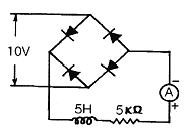
- 1.8
- 4.5
- 6.4
- 9.0
(정답률: 42%)
47. 상전압 200[V]인 3상 반파 정류회로에 SCR을 사용하여 위상 제어할 때 제어각이 60º이면 직류 출력 전압은 약 몇 [V]인가?
- 117
- 187
- 216
- 234
(정답률: 41%)
48. 다음 중 서보모터가 갖추어야 할 조건이 아닌 것은?
- 기동 토크가 클 것
- 토크-속도곡선이 수하 특성을 가질 것
- 굵고 짧게 할 것
- 전압이 0이 되었을 때 신속하게 정지할 것
(정답률: 56%)
49. 동기 발전기에서 코일 피치와 극간격의 비를 β라 하고, 상수를 m, 1극 1상당의 슬롯수를 q라고 할 때, 분포권 계수를 나타내는 식은?
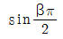
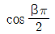
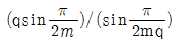
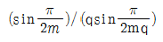
(정답률: 74%)
50. 인견 공장에서 사용되는 포트 모터의 속도 제어는?
- 극수 변환에 의한 제어
- 주파수 변화에 의한 제어
- 저항에 의한 제어
- 2차 여자에 의한 제어
(정답률: 48%)
51. 그림은 단상 직권 정류자 전동기의 개념도이다. C를 무엇이라고 하는가?
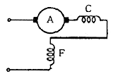
- 제어권선
- 보상권선
- 보극 권선
- 단층권선
(정답률: 71%)
52. 무부하 전압이 120[V]인 분권 발전기의 전압 변동률이 5[%]이다. 이 발전기의 정격 전압은 약 얼마인가?
- 125.4
- 119.3
- 114.3
- 109.4
(정답률: 64%)
53. 누설 변압기의 설명 중 틀린 것은?
- 2차 전류가 증가하면 누설자속은 증가한다.
- 누설 자속이 증가하면 주자속은 증가하여 2차 유도 기전력이 증가한다.
- 2차 전류가 증가하면 2차 전압강하가 증가한다.
- 리액턴스가 크기 때문에 전압변동률이 크고 역률은 낮다.
(정답률: 51%)
54. 유도발전기에 관한 설명 중 틀린 것은?
- 회전자속을 만들기 위해 회전자에 DC 여자전류를 공급한다.
- 유도 발전기의 주파수는 전원의 주파수로 정하고 회전속도에는 관계가 없다.
- 출력은 회전자 속도와 회전자속의 상대속도에는 비례하기 때문에 출력을 증가하려면 속도를 증가 시킨다.
- 동기 발전기와 같이 동기화 할 필요가 없고 난조 등 이상 현상이 생기지 않는다.
(정답률: 29%)
55. 다음 중 3단자 사이리스터가 아닌 것은?
- SCR
- GTO
- TRIAC
- SSS
(정답률: 72%)
56. 임피던스 전압강하가 5[%]인 변압기가 운전 중 단락 되었을 때, 단락 전류는 정격전류의 몇 배인가?
- 2
- 5
- 10
- 20
(정답률: 65%)
57. 반작용 전동기에 관한 설명 중 틀린 것은?
- 여자를 약학 하면 뒤진 전류가 흐르고, 전기자 반작용은 계자를 강화시키는 작용을 한다.
- 뒤진 전류가 흐를 때는 직류 여자가 없어도 계자가 여자되므로 계자 권선이 없다.
- 3상 교류를 가하면 전기자 전류의 무효분은 계자 자속을 만들어 전류의 유효분 사이의 토크가 발생한다.
- 직류 여자를 필요로 하고, 철극성 때문에 동기속도 이하로 회전한다.
(정답률: 26%)
58. 직류기의 전기자 권선을 중권으로 하였을 때 다음 중 틀린 것은?
- 전기자 권선의 병렬 회로 수는 극수와 같다.
- 브러시 수는 항상 2개이다.
- 전압이 낮고, 비교적 전류가 큰 기기에 적합하다.
- 균압환 접속을 할 필요가 있다.
(정답률: 70%)
59. 변압기 결선에서 제3고조파 전압이 발생하는 결선은?
- Y-Y
- Δ-Δ
- Δ-Y
- Y-Δ
(정답률: 69%)
60. 3상 동기 발전기의 1상의 유도 기전력 120 [V], 반작용 리액턴스 0.2[Ω]이다. 90º 진상전류가 20[A]일 때 발전기의 단자전압 [V]은? (단, 기타는 무시한다.)
- 116
- 120
- 124
- 140
(정답률: 42%)
4과목: 회로이론 및 제어공학
61. 그림과 같은 4단자 망 회로의 4단자 정수 중 D의 값은? (단, 각 주파수는 w[rad/sec]이다.)
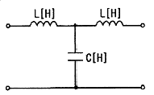
- 1ωC
- jωL
- jωL(1-ω2LC)
- 1-ω2LC
(정답률: 64%)
62. 어떤 회로의 전류가 i(t)=20-20-200t[A]로 주어졌다. 정상값은 몇 [A]인가?
- 5
- 12.6
- 15.6
- 20
(정답률: 57%)
63. 그림과 같이 선간전압 200[V]의 3상 전원에 대칭 부하를 접속할 때 부하 역률은? (단, R=9[Ω], 1/(ωC)=4[Ω]이다.)
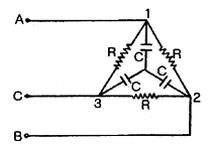
- 0.6
- 0.7
- 0.8
- 0.9
(정답률: 36%)
64. 전압의 순시값이 다음과 같을 때 실효값은 약 몇 [V]인가?
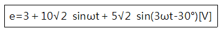
- 11.6
- 13.2
- 16.4
- 20.1
(정답률: 71%)
65. 대칭 n 상에서 선전류와 상전류 사이의 위상차는 어떻게 되는가?
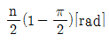
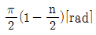
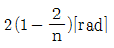
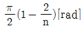
(정답률: 62%)
66. 60[hz]에서 3[Ω]의 리액턴스를 갖는 자기 인덕턴스 L값 및 정전용량 C 값은 약 얼마인가?
- 6[mH], 660[μF]
- 7[mH], 770[μF]
- 8[mH], 884[μF]
- 9[mH], 990[μF]
(정답률: 58%)
67. 자동제어계에서 중량함수 라고 불리어 지는 것은?
- 인디셜함수
- 임펄스 함수
- 전달 함수
- 램프 함수
(정답률: 45%)
68. 분포정수 회로에서 무왜형 조건이 성립하면 어떻게 되는가?(오류 신고가 접수된 문제입니다. 반드시 정답과 해설을 확인하시기 바랍니다.)
- 감쇄량은 주파수에 비례한다.
- 전파 속도가 최대로 된다.
- 감쇠량이 최소로 된다.
- 위상 정수는 주파수에 무관하여 일정하다.
(정답률: 53%)
69. 그림과 같은 회로에서 i1=lm sinωt[A]일 때, 개방된 2차 단자에 나타나는 유기 기전력 V2는 얼마인가?
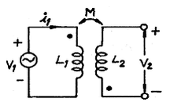
- ωM sinωt [A]
- ωM cosωt [A]
- ωMlm sin(ωt-90º) [A]
- ωMlm sin(ωt＋90º) [A]
(정답률: 41%)
70. 함수 f(t)=1-e-et의 라플라스 변환은?
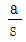
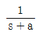
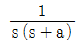
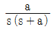
(정답률: 59%)
71. s 평면의 허수축은 z 평면의 어느 부분에 사상되는가?
- 원점을 중심으로 한 무한 원주 상
- 원점을 중심으로 한 단위 원상
- 원점을 중심으로 한 단위 원 내부
- 원점을 중심으로 한 단위 원 외부
(정답률: 36%)
72. 다음의 설명 중 틀린 것은?
- 최소 위상 함수는 양의 위상 여유이면 안정하다
- 최소 위상 함수는 위상 여유가 0이면 임계안정하다.
- 최소 위상 함수의 상대 안정도는 위상각의 증가와 함께 작아진다.
- 이득 교차 주파수는 진폭비가 1이 되는 주파수이다.
(정답률: 55%)
73. 단위 궤환제어계의 개루프 전달함수가 G(s)=K/(s(s+2))일 때, 특성 방정식의 근 K가 -∞로부터 ＋∞까지 변할 때 알맞지 않는 것은?
- -∞＜K＜0 에 대하여 근이 모두 실근이다.
- K=0에 대하여 S1=0, S2=-2 근은 G(s)의 극과 일치한다.
- 0＜K＜1에 대하여 2개의 근은 모두 음의 실근이다.
- 1＜K＜∞에 대하여 2개의 근은 음의 실부를 갖는 중근이다.
(정답률: 49%)
74. 그림의 회로는 어느 게이트에 해당하는가?
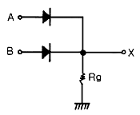
- OR
- AND
- NOT
- NOR
(정답률: 67%)
75. 상태 방정식
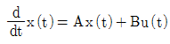
, 출력 방정식 y(t)=Cx(t)에서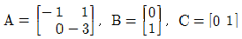
일 때 다음 설명 중 옳은 것은?- 이 시스템은 제어 및 관측이 가능하다.
- 이 시스템은 제어는 가능하나, 관측은 불가능하다.
- 이 시스템은 제어는 불가능하나, 관측은 가능하다.
- 이 시스템은 제어 및 관측이 불가능하다.
(정답률: 42%)
76. 근궤적의 출발점 및 도착점과 관계되는 G(s), H(s)의 요소는? (단, K＞0이다.)
- 영점, 분기점
- 극점, 영점
- 극점, 분기점
- 지지점, 극점
(정답률: 68%)
77. 주파수 전달함수 G(jω)=1/(j100ω)인 계에서 ω=0.1[rad/s]일 때 계의 이득 [dB] 및 위상각 θ[deg]는 얼마인가?
- -20, -90º
- -40, -90º
- 20, -90º
- 40, 90º
(정답률: 56%)
78. 전달 함수
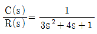
인 제어계는 다음 중 어느 경우인가?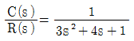
- 과제동
- 부족제동
- 임계제동
- 무제동
(정답률: 60%)
79. z 변환 함수 Z/(Z-e-aT)에 대응되는 라플라스 변환과 이에 대응되는 시간함수는?
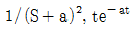
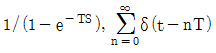
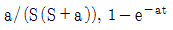
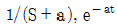
(정답률: 59%)
80. 그림과 같은 블록 선도에서 입력 R과 외란 D가 가해질 때 출력 C는?
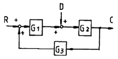
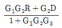
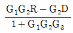
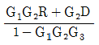
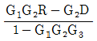
(정답률: 66%)
5과목: 전기설비기술기준 및 판단기준
81. 가공 전선로의 지지물 구성체가 강관으로 구성되는 철탑으로 할 경우 갑종 풍압하중은 몇 [Pa]의 풍압을 기초로 하여 계산한 것인가? (단, 단주는 제외하며, 풍압은 구성재의 수직 투영면적 1[m2]에 대한 풍압이다.)
- 588
- 1117
- 1255
- 2157
(정답률: 66%)
82. 전력보안 통신 설비인 무선통신용 안테나 또는 반사판을 지지하는 철근콘크리트주의 기초의 안전율은 얼마 이상이어야 하는가? (단, 무선 통신용 안테나 또는 반사판이 전선로의 주위 상태를 감시할 목적으로 시설되는 것이 아닌 경우이다.)
- 1.5
- 2.2
- 2.5
- 4.5
(정답률: 45%)
83. 출퇴표시등 회로에 전기를 공급하기 위한 변압기는 2차측 전로의 사용전압이 몇 [V]이하인 절연 변압기 이어야 하는가?
- 40
- 60
- 150
- 300
(정답률: 53%)
84. 과전류차단기로 시설하는 퓨즈 중 고압전로에 사용하는 비포장 퓨즈는 정격전류의 1.25배의 전류에 견디고 또한 2배의 전류로 몇 분 안에 용단되어야 하는가?
- 2
- 60
- 120
- 180
(정답률: 56%)
85. 가공전선로의 지지물 중 지선을 사용하여 그 강도를 분담시켜서는 아니 되는 것은?
- 철탑
- 목주
- 철주
- 철근 콘크리트 주
(정답률: 65%)
86. 교류식 전기철도는 그 단상 부하에 의한 전압 불평형으로 인하여 교류식 전기철도의 변전소의 변압기에 접속하는 전기 사업용 발전기, 조상기, 변압기 기타의 기계기구에 장해가 생기지 아니하도록 시설하여야 한다. 이때 전압 불평형의 허용 한도는 그 변전소의 수전점에서 몇 [%]이하이어야 하는가?
- 3
- 4
- 5
- 6
(정답률: 57%)
87. 다음 중 금속관 공사에 대한 기준으로 옳지 않은 것은?(오류 신고가 접수된 문제입니다. 반드시 정답과 해설을 확인하시기 바랍니다.)
- 저압 옥내배선에 사용하는 전선으로 옥외용 비닐 절연전선을 사용하였다.
- 저압 옥내 배선의 금속관 안에는 전선에 접속점이 없도록 하였다.
- 콘크리트에 매설하는 금속관의 두께는 1.2[mm]를 사용하였다.
- 저압 옥내배선의 사용전압이 400[V] 이상인 관에는 특별 제3종 접지공사를 하였다.
(정답률: 65%)
88. 일반적으로 저압 옥내간선에서 분기하여 전기 사용기계기구에 이르는 저압 옥내 전로는 저압 옥내간선과 분기점에서 전선의 길이가 몇 [m] 이하인 곳에 개폐기 및 과전류 차단기를 시설하여야 하는가?
- 0.5
- 1.0
- 2.0
- 3.0
(정답률: 49%)
89. 고압전로 또는 특별고압 전로와 저압전로를 결합하는 변압기의 저압측의 중성점에 시설하여야 하는 접지 공사는?(오류 신고가 접수된 문제입니다. 반드시 정답과 해설을 확인하시기 바랍니다.)
- 제 1종 접지공사
- 제 2종 접지공사
- 제 3종 접지공사
- 특별 제 3종 접지 공사
(정답률: 51%)
90. 최대사용전압이 440[V]인 전동기의 절연내력 시험전압은 몇 [V]인가?
- 330
- 440
- 500
- 660
(정답률: 55%)
91. 특별고압 가공 전선로의 전선으로 케이블을 사용하여 시설하는 경우 기준에 적합하지 않은 것은?
- 케이블은 조가용선에 행거에 의하여 시설할 것
- 케이블은 조가용선에 접촉시키고 그 위에 쉽게 부식되지 아니하는 금속 테이프 등을 20[cm]이하의 간격을 유지시켜 나선형으로 감아 붙일 것
- 조가용선은 인장강도 13.93[kN]이상의 연선 또는 단면적 38[mm2] 이상의 아연도강 연선일 것
- 조가용선 및 케이블의 피복에 사용하는 금속체에는 제3종 접지공사를 할 것
(정답률: 54%)
92. 수소 냉각식 발전기 등의 시설기준을 잘못 설명한 것은?
- 발전기는 기밀구조의 것이고, 또한 수소가 대기압에서 폭발하는 경우에 생기는 압력에 견디는 강도를 가지는 것
- 발전기안의 수소의 온도를 계측하는 장치를 시설 할 것
- 발전기 안의 수소의 압력을 계측하는 장치 및 그 압력이 현저히 변동한 경우에 이를 경보하는 장치를 시설 할 것
- 발전기 안의 수소의 순도가 85[%]이상으로 상승하는 경우 이를 경보하는 장치를 시설 할 것
(정답률: 48%)
93. 고압 가공전선로에 사용하는 가공지선은 인장강도가 5.25[kN]이상의 것 또는 지름 몇 [㎜]의 나경동선을 사용하여야 하는가?
- 2.6
- 3.2
- 4.0
- 5.0
(정답률: 53%)
94. “제 2차 접근상태”라 함은 가공 전선이 다른 시설물과 접근하는 경우에 그 가공전선이 다른 시설물의 위쪽 또는 옆쪽에서 수평거리로 몇 [m] 미만인 곳에 시설되는 상태를 말하는가?
- 1.2
- 2
- 2.5
- 3
(정답률: 49%)
95. 다음 중 지중 전선로의 전선으로 가장 알맞은 것은?
- 절연전선
- 동복강선
- 케이블
- 나경동선
(정답률: 61%)
96. 시가지 도로를 횡단하여 저압 가공전선을 시설하는 경우 지표상 높이는 몇 [m] 이상으로 하여야 하는가?
- 4.0
- 5.0
- 6.0
- 6.5
(정답률: 50%)
97. 점검할 수 있는 은폐장소로서 건조한 곳에 시설하는 애자 사용 공사에 의한 저압 옥내 배선은 사용전압이 400[V] 이상인 경우에 전선과 조영재와의 이격거리는 몇 [㎝] 이상이어야 하는가?
- 2.5
- 3.0
- 4.5
- 5.0
(정답률: 43%)
98. 사용 전압이 35[kV] 이하인 특별고압 가공전선과 저압 가공전선을 동일 지지물에 시설하는 경우 전선 상호간 이격거리는 몇 [m] 이상이어야 하는가?
- 1.0
- 1.2
- 1.5
- 2.0
(정답률: 34%)
99. 일반적으로 강색 차선의 레일면상의 높이는 몇 [m] 이상 이어야 하는가?
- 4.0
- 4.5
- 5.0
- 5.5
(정답률: 27%)
100. 발전소, 변전소, 개폐소 또는 이에 준하는 곳에 개폐기 또는 차단기에 사용하는 압축 공기 장치의 공기 압축기는 최고 사용압력의 1.5배의 수압을 연속하여 몇 분간 가하여 시험을 하였을 때에 이에 견디고 또한 새지 아니하여야 하는가?
- 5
- 10
- 15
- 20
(정답률: 64%)